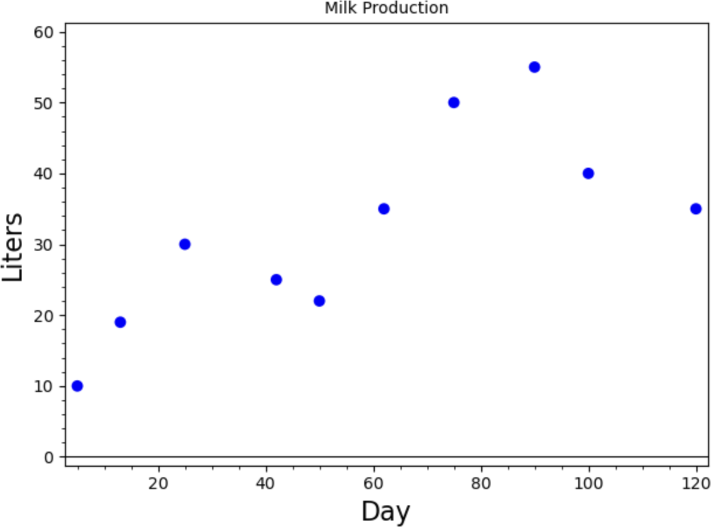
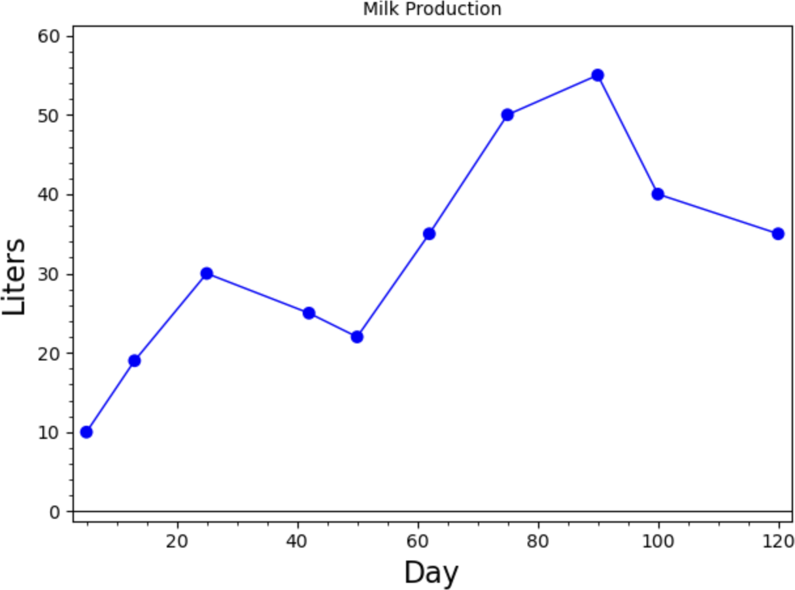
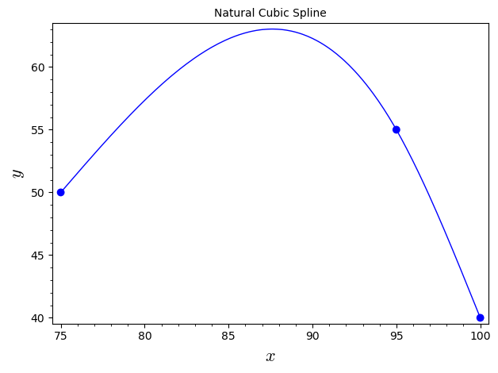
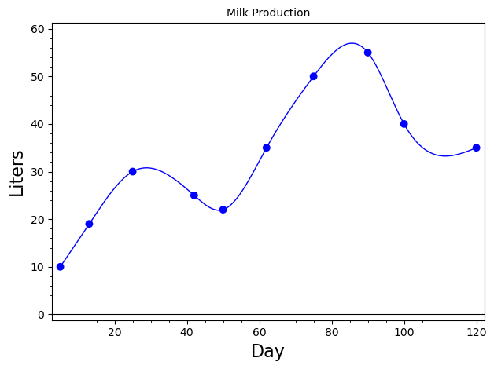

Section 7.6 Spline Models
Consider the data below that gives the liter of milk given by a dairy cow on each of several different days after she begins producing.
A graph of the data is shown below.

Our goal is to model liters in terms of day so that we can predict how much milk was given on the days not listed in the table.
The graph of the data certainly does not resemble an exponential, logarithmic, or power curve, so a linearizable model does not seem appropriate. Low-order polynomials do not capture the trend of the data, and higher-order polynomials produce oscillations that do not seem appropriate. We instead consider spline models where we simply “connect the dots” with either straight lines, forming a linear spline model, or with cubic polynomials, forming a cubic spline model.
Example 7.6.1. Linear Spline Model.
The graph of a linear spline is easy to form:

To use the model to make predictions, we need to know the slope and intercept of each line segment. This is not difficult to obtain. So for example, if we want to predict the liters of milk produced on Day 12, we would use the line segment between \((5,10)\) and \((13,19)\text{:}\)
So the model predicts the cow will produce 17.875 liters of milk on Day 12.
Example 7.6.2. Cubic Spline Model.
Linear spline models are easy to calculate, but they do not form smooth curves. In fact, the curve is not differentiable at any one of the data points. This type of model predicts sharp changes at each data point that do not seem realistic. To solve this problem we connect the dots with cubic polynomials instead of straight lines and put conditions on the derivatives of each segment.
To illustrate this process, we consider a set of three data points \(\{(x_1, y_1), (x_2, y_2), (x_3, y_3)\}\) where \(x_1 \lt x_2 \lt x_3\text{.}\) Each \(x\)-value is called a knot. We connect them using two cubic polynomials:
We now need to find the values of the eight parameters \(a_1\text{,}\) \(b_1\text{,}\) \(c_1\text{,}\) \(d_1\text{,}\) \(a_2\text{,}\) \(b_2\text{,}\) \(c_2\text{,}\) and \(d_2\text{.}\) For the model to form a smooth curve that goes through each data point, we need to satisfy the following three conditions:
Each polynomial must pass through the two data points at the ends of the interval over which it is defined.
The first derivatives of two polynomials that meet must be equal at the point at which they meet.
The second derivatives of two polynomials that meet must be equal at the point at which they meet.
The first condition gives us the following four equations:
The first derivatives of the polynomial are
The second condition gives us the equation/
The second derivatives of the polynomials are
The third condition then gives us the equation
This gives us six equations for eight unknowns. To uniquely determine the values of these unknowns, we need two more equations. To this end, we specify the values of the second derivatives at the end points of the data set (at \(x_1\) and \(x_3\)).
If we want these second derivatives to be some known values, say \(m_1\) and \(m_2\text{,}\) we would add the equations
The resulting model is called a clamped spline. If, however, we do not know the values of the derivatives, we simply set them equal to 0 and have the equations:
The resulting model is called a natural spline and is what's implemented by SageMath.
We can rewrite the above equations so that the constants are on the right-hand side:
Rewriting this system in matrix form yields:
which has the general form \(A\pmb{x}=\pmb{b}\) where \(\pmb{x}=(a_1, b_1, c_1, d_1, a_2, b_2, c_2, d_2)\) is the vector of unknowns. We can solve this system using inverses, \(\pmb{x}=A^{-1}\pmb{b}\text{.}\)
The good news is that rather than enter a large matrix into SageMath, we can take advantage of built-in commands to build cubic splines given a set of data. (For large sets of data the calculations for a cubic spline model can get quite complicated. For 11 data points, the model is made up of 10 separate cubic polynomials with a total of 40 unknown parameters. This results in a \(40 \times 40\) matrix \(A\text{.}\))
Suppose we want to fit a cubic spline to the three data points \(\{(75, 50), (95, 55), (100,40)\}\text{.}\) We can enter the following commands into SageMath:

We note that while we do not get a formula for the spline (as we would if we computed the solution with matrices), we can ask for the value of \(S\) or its derivative at a point, or the value of the definite integral (area under the curve) over an interval.
What we cannot do is ask for any of these things outside the domain defined by the three points.
(“nan” is short for “not a number.”)
We can find cubic splines for any set of points with the same commands.

Notice how we avoid the problem we had with using a single polynomial model: the transition between points seems natural, and does not have wild oscillations. Thus we can use the spline to predict values in between data points.
The cubic spline model predicts that the cow will produce 17.861 liters of milk on Day 12. (The linear spline model predicted 17.875 liters.)
Checkpoint 7.6.3.
A researcher observes a particle moving in a straight line and measures its velocity at three points in time as recorded in the table below. He wants to estimate how far the particle traveled over the interval of time \([0, 5]\text{.}\)
In general, if \(f(t)\) = velocity of an object at time \(t\text{,}\) we can calculate the distance it traveled over an interval of time \([t_0, t_1]\) by
(a)
Fit a linear spline model to the data to estimate \(f(t)\) and use the result to estimate the distance traveled. What is the meaning of the slope of each of the line segments?
(b)
Fit a cubic spline model to the data to estimate \(f(t)\) and use the result to estimate the distance traveled. Also, estimate the acceleration at time \(t=1.5\text{.}\)
(c)
Which of the two estimates of the distance traveled do you think is more accurate? Why?